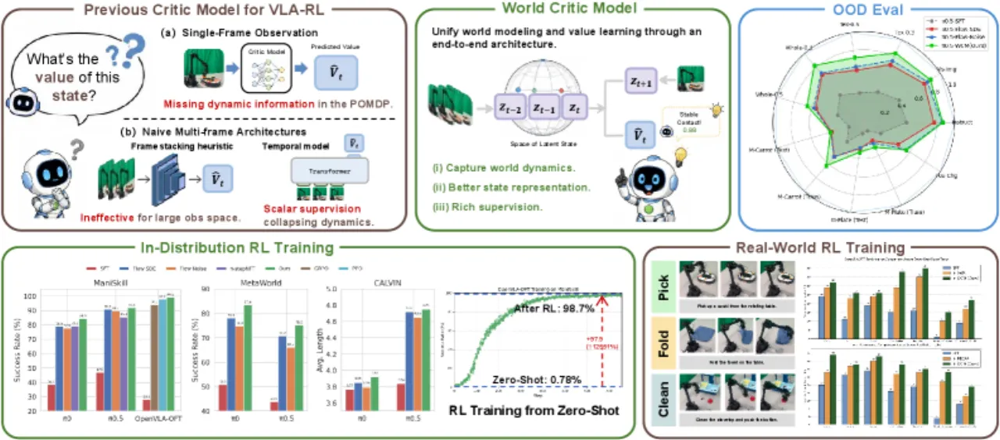
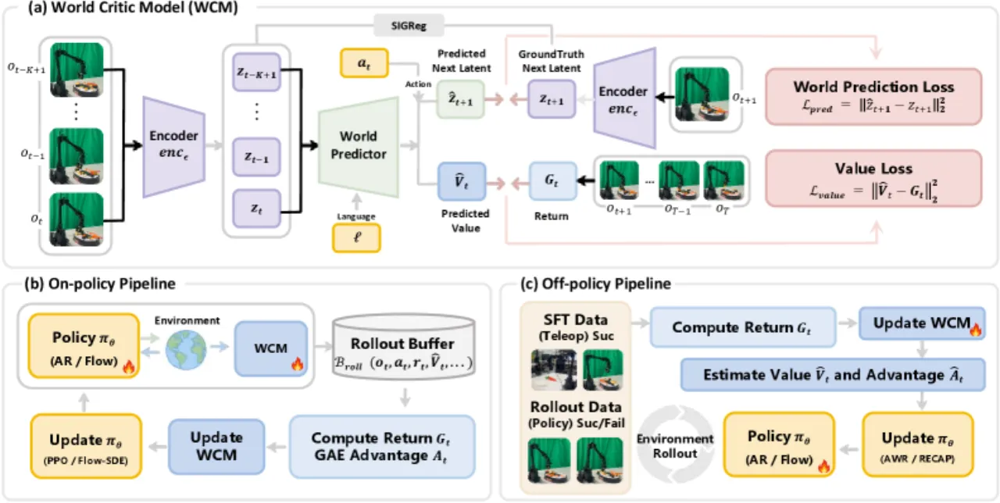
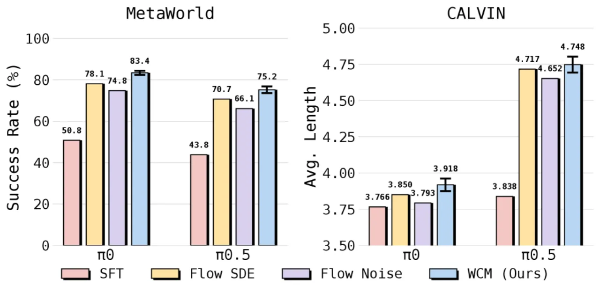
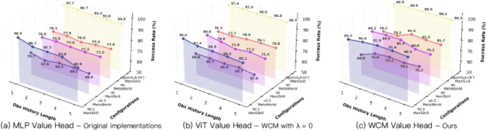
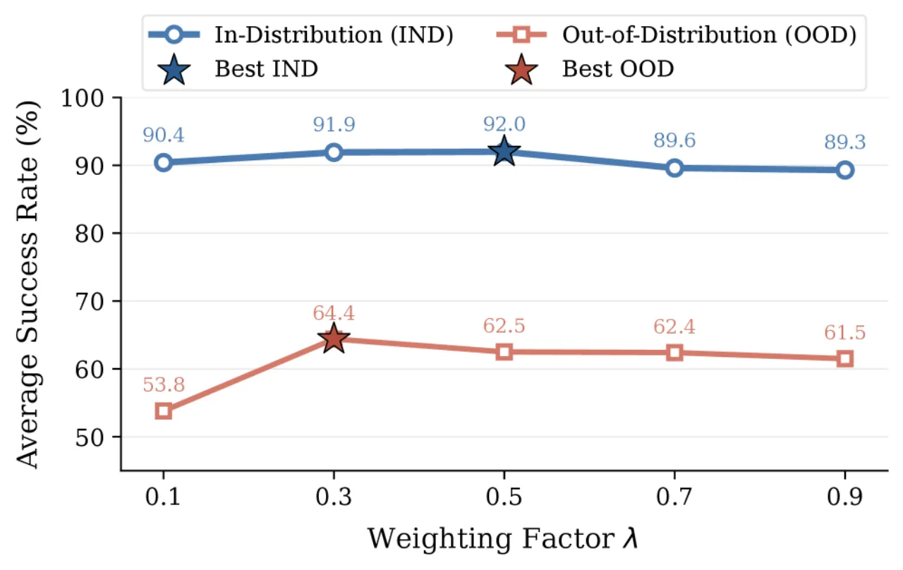

critic-based 的 VLA-RL 里，value 估计大多只吃单帧观测，与机器人控制的部分可观测（POMDP）本质不符。WCM 把 critic 换成一个基于 LeJEPA 的轻量世界模型：联合预测未来 latent state 与估计 value，让 critic 表征被显式训练去刻画时序动态，而非仅回归标量回报。在 4 个基准共 149 个任务与 7 个真实机器人任务上取得 SOTA，OOD 泛化增益尤为显著。
critic-based 的 RL 后训练依赖一个 value estimator，但现有方法大多在单帧观测或单帧 VLM backbone latent 上估值——这与机器人控制的部分可观测性存在根本性错配。朴素地把观测历史塞进 critic，会在高维视觉空间上带来指数级复杂度；而且即便塞进去也不奏效，因为纯标量回报回归为学习跨时序动态提供的监督严重不足。
作者把根因归结为一个 “state approximation problem”：without an explicit world modeling objective, the critic's representation cannot capture the temporal structure needed for accurate value estimation.

WCM 建立在轻量的 LeJEPA 结构之上。一个 observation encoder 先把过去 K 帧的图像分别编码为序列 latent state；随后一个 predictor 挂两个 decoder head，分别预测下一步 latent state（world head）与估计 value（value head）。它可以无缝接入 on-policy 与 off-policy 两套训练管线，并兼容 Pi0、Pi0.5、OpenVLA-OFT 等 SOTA VLA backbone。

论文把 VLA 机器人操作显式建模为部分可观测马尔可夫决策过程（POMDP）：观测 ot 只部分揭示隐藏状态 st。单帧 critic 无法从当前观测恢复真实状态，这正是价值估计不准的来源。WCM 通过引入世界建模目标，让 critic 表征去逼近隐藏状态的时序结构。
训练损失由三项组成——value 估计损失、下一状态预测损失 Lpred（teacher-forcing 下预测 latent 与真实 latent 的 L2 误差），以及 LeJEPA 的 SIGReg（Sketched Isotropic Gaussian Regularization）损失，用以防止表征坍缩：
L = Lvalue + λ · Lpred + η · LSIGReg
其中 λ 平衡「回归回报」与「预测未来」两种监督——λ=0 即退化为只有时序建模能力、无世界预测的 ViT critic（消融中的对照）。
评测覆盖 ManiSkill（IND 与沿 vision/semantic/execution 三轴的 OOD）、MetaWorld（pick-and-place 之外的接触任务）、CALVIN（长程任务）与 LIBERO-Plus（泛化能力）；所有 policy 均从 few-shot SFT baseline 初始化，用稀疏 0/1 reward 训练。“+WCM” 表示把 Flow-SDE / PPO 的 critic 替换为 WCM。指标逐字摘自论文。
| Backbone | Method | IND | OOD avg. |
|---|---|---|---|
| Pi0 | SFT | 38.4 | 18.1 |
| Pi0 | prev. best (π-stepNFT) | 79.2 | 50.4 |
| Pi0 | + WCM | 84.4 | 51.5 |
| Pi0.5 | SFT | 47.0 | 26.4 |
| Pi0.5 | prev. best (π-stepNFT) | 85.4 | 59.5 |
| Pi0.5 | + WCM | 91.9 | 64.4 |
| OpenVLA-OFT | SFT | 28.1 | 18.3 |
| OpenVLA-OFT | prev. best (PPO) | 97.7 | 77.1 |
| OpenVLA-OFT | + WCM | 99.0 | 77.9 |
| OpenVLA-OFT | Zero-Shot → + WCM | 0.8 → 98.7 | 0.8 → 73.5 |
三条关键发现（引自论文）：(1) ManiSkill 上大幅提升，OpenVLA-OFT 取得 252% 的相对提升；(2) 从极低初始性能也能稳定提升——当 OpenVLA-OFT 在完全未见 ManiSkill 数据（0.78%）时初始化，WCM 把性能提高了 12,551%；(3) 在 MetaWorld（需要稳定接触的任务）与 CALVIN（长程）上同样领先。

“One-SFT” 每任务仅见 1 条演示，“Full-SFT” 见 50 条；“+WCM” 自 One-SFT 初始化。WCM 从极弱起点出发，total 成功率反超对应 Full-SFT。
| Backbone | Full-SFT | One-SFT | + WCM | Δ vs One-SFT |
|---|---|---|---|---|
| Pi0 | 71.2 | 39.1 | 72.8 | +33.7 |
| Pi0.5 | 72.9 | 38.0 | 73.7 | +35.7 |
| OpenVLA-OFT | 71.7 | 29.3 | 74.0 | +44.7 |
7 个真实操作任务上用 OpenVLA-OFT 与 Pi0.5 做 off-policy RL，部署稳定。以 “拿起物体” 为例（成功次数 / 25 trials）：纯 sim SFT 为 0/25，经 sim RL 提升到 carrot 7、banana 7、pepper 6；real SFT 起点为 carrot 13、banana 2、pepper 4，叠加 sim RL 后为 11 / 8 / 9，语义与执行维度的 OOD 也同步改善。


所有 policy 均从 few-shot SFT baseline 起步、用稀疏 0/1 reward 训练；WCM 是对 critic 的替换而非从零学习，其增益建立在已有 SFT 与奖励设定之上，未探讨无 SFT 或稠密奖励下的表现。
Figure 6 显示 IND 与 OOD 的最优 λ 并不一致，需针对目标场景取舍——引入了一个对结果敏感的超参数。
真机验证覆盖 7 个任务、每任务 25 trials，且以 Pi0.5 / OpenVLA-OFT 的 off-policy RL 为主；主结论仍主要来自 4 个仿真基准，大规模真实部署的鲁棒性有待进一步验证。
把过去 K 帧编码为序列 latent 提升了时序建模能力，但也随 K 增加计算/显存成本；论文以 LeJEPA 轻量化缓解，未系统给出精度—开销的完整边界。